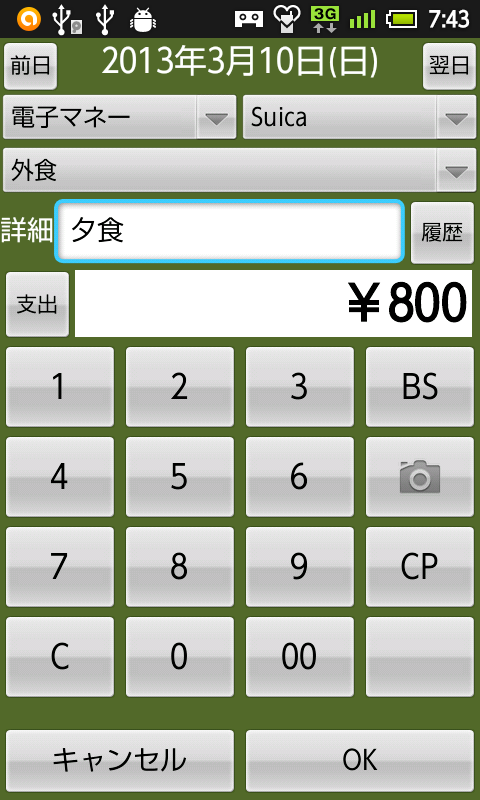

Kmoney/mobileの使い方
初期設定
基本データの入力
はじめて起動したとき、費目、銀行名、ユーザ名などのデータがあらかじめ数件入っています。メニューバーの「基本データ」で変更してお使いください。詳しくは「基本データの設定」で説明します。
データの入力
 初期画面では日々の支出や収入を入力します。
日付
画面中央上部にある日付を長押しすると、日付選択ダイアログが現れて日付を変更することができます。その左右にある「前日」「翌日」ボタンを押下すると一日ずつ日付をずらすことができます。
種別
日付の下にある選択リストにより、支出や収入の種別を指定します。現金、銀行、クレジットカード、電子マネーの4種類を選択できます。現金以外の場合、右に銀行名やクレジットカード名の選択リストが現れます。
費目
種別の下にある選択リストで費目を選択します。
詳細
「詳細」欄には、支出や収入の具体的な内容を記入してください。「履歴」ボタンを押すと過去の記入内容のうち頻度の高いものが表示されます。
金額
金額は数字キーを使って入力してください。「C」で入力した金額の全桁を消去し、「BS」で最後の1桁を消去します。
写真
写真ボタン(カメラが表示されているボタン)を押すとカメラが起動します。レシートなどの写真を添付するのにお使いください。
コピー
月別表示画面で既存のデータを選択した場合、「CP」ボタンを押すことでそのデータを新規のデータとして再利用できます。過去のデータとほぼ同じ内容を入力したい場合にお使いください。
入力の完了または取消
「OK」ボタンを押すと入力内容が保存されます。「キャンセル」ボタンを押すと保存されません。いずれの場合も月別一覧画面に遷移します。
月別一覧
月別一覧画面では、入力内容が月ごとに表示されます。
変更
任意の行を選択すると入力画面に戻り、選択行のデータが表示されます。データを変更して「OK」ボタンを押すことにより入力内容を訂正できます。
削除
削除したい場合、そのデータの行を長押しし、表示されたメニューから「削除」を選択してください。
新規入力
「入力」ボタンを押すと入力画面に戻り、新しいデータを入力できます。
集計画面への遷移
「集計」ボタンを押すと月別集計画面へ遷移します。
月別集計
月別集計画面では、費目ごとの集計が月ごとに表示されます。
新規入力
「入力」ボタンを押すと入力画面に戻り、新しいデータを入力できます。
一覧画面への遷移
「一覧」ボタンを押すと月別一覧画面へ遷移します。
基本データの設定
メニューの「基本データ」で、ユーザ、費目、銀行、クレジットカード、電子マネーを設定します。あらかじめ登録されているデータがありますので変更して使ってください。
最初に家族の名前をユーザーとして登録します。次にメニューの「ユーザ切り替え」で登録したユーザーのうち一つを選択します。その後、ほかの基本データを登録してください。選択したユーザーと銀行・クレジットカード・電子マネーが関連づけられます。
設定
メニューの「設定」で設定を変更できます。
「インポート／エクスポート」では、インポート元とエクスポート先を指定します。
「スワイプ」では、月別一覧画面でスワイプを有効にするかどうかを設定します。